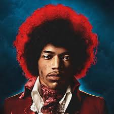
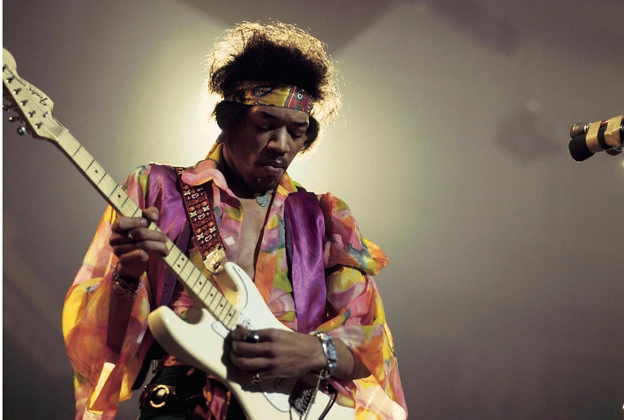
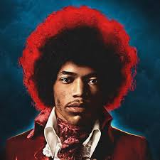
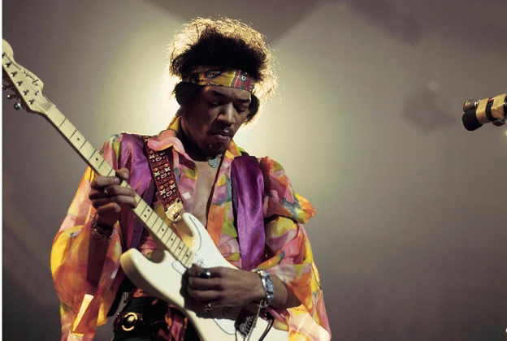

Jimi Hendrix

 



One of the Greatest Guitar Player Ever.
As she slams the door in his drunken face,
Down the street you can hear her scream "you're a disgrace"
And now he stands outside
And all the neighbors start to gossip and drool
He cries "Oh girl, you must be mad,
What happened to the sweet love you and me had?"
Against the door he leans and starts a scene
And his tears fall and burn the garden green
And so castles made of sand,
Fall in the sea, eventually
A little Indian brave who before he was ten,
Played war games in the woods with his Indian friends,
And he built a dream that when he grew up,
He would be a fearless warrior Indian Chief
Many moons passed and more the dream grew stronger,
Until tomorrow, he would sing his first war song,
And fight his first battle, but something went wrong,
Surprise attack killed him in his sleep that night
And so castles made of sand,
Melts into the sea, eventually
There was a young girl, whose heart was a frown,
'Cause she was crippled for life, and she couldn't speak a sound
And she wished and prayed she could stop living,
So she decided to die
She drew her wheel chair to the edge of the shore, and to her legs she smiled
"You won't hurt me no more"
But then a sight she'd never seen made her jump and say
"Look, a golden winged ship is passing my way"
And it really didn't have to stop, it just kept on going
And so castles made of sand
Slips into the sea, eventually